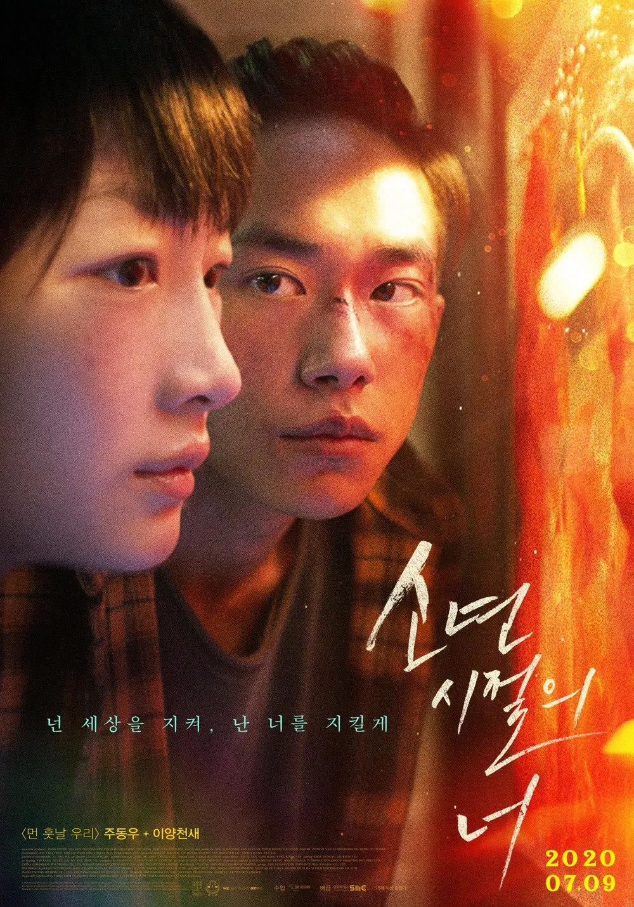

剧情简介
南亚某国，诈骗之风盛行，其背后隐藏着政府监管的缺失与纵容。在这片黑暗的土地上，
科技产业园成为了诈骗团伙的温床，陆经理（王传君饰）作为头目，以其狡诈与暴力手段
，构筑了一个充满罪恶的王国。
程序员潘生（张艺兴饰），本是寻求高薪工作的平凡青年，却不慎踏入陆经理的陷阱，
沦为网络诈骗的推手。他的命运从此被黑暗笼罩，失去了自由与尊严。而模特梁安娜（金晨饰），
为了追寻更好的生活，毅然决然地飞往异国他乡，却不料沦为陆经理的玩物，用美色为诈骗团伙牟取暴利。
在这片人间炼狱中，潘生与梁安娜仿佛陷入了无尽的绝望。他们失去了与外界的联系，
护照被没收，生活被严密监控，仿佛再也见不到活着出去的希望。然而，在这片黑暗中，
他们是否能找到一线生机，挣脱陆经理的魔爪，重获自由与尊严，成为了他们心中唯一的期盼。
剧情简介
南宋绍兴年间，一代忠良岳鹏举物故，引无数良臣赤子扼腕叹息。四年后，
奸相秦桧（雷佳音 饰）率兵与金国相约会谈。谁知会谈前夜，金国使者在秦桧驻地为人所害。
事态紧急，亲兵营副统领孙均（易烊千玺 饰）得知不成器的老舅——小兵张大（沈腾 饰）了解线索，
遂将其带到秦桧处。秦桧命二人一个时辰内找出真凶，否则一律处死。时间飞速流逝，
舞姬瑶琴（王佳怡 饰）、更夫丁三旺（潘斌龙 饰）、马夫刘喜（余皑磊 饰）接连卷入其中，
而宰相府总管何立（张译 饰）与副总管武义淳（岳云鹏 饰）相继入场，又将这场波谲云诡的调查涂满血腥。
谁是真正凶手？他们行刺所为何事？奸相内心深处又藏着什么不可告人的秘密？

剧情简介
高三学生陈念（周冬雨饰）性格内向，本是学校里的优等生，努力复习、考上好大学是她唯一的念头。
而高考前夕同校学生胡晓蝶（张艺凡 饰）的跳楼自杀却将她卷入其中，她因此遭到了以魏莱（周也 饰）
为首的三人组的霸凌。魏莱表面上看是乖巧的优等生，实际上心思毒辣，她和胡晓蝶的死有不可分割的原因。
在陈念最孤独的时刻，偶然遇到了小混混小北（易烊千玺 饰），两人逐渐熟悉，小北暗中保护陈念免受魏莱的欺凌，
却引发了一系列意料之外的连锁反应，随着时间的推移，他们心心相惜产生了真挚的感情。大多数人的18岁都是
明媚快乐的，而他们却在18岁这个夏天提前感受 到了成人世界的漠然。一场秘而不宣的“战斗”正在上演，他们将一起守护少年的尊严 。
剧情简介
1980年训练赛，中国女排对战中国男排冠军江苏队，女排负。但那一代女排训练之艰苦，
之刻苦，之永不言弃，已跃然银幕。1981年大阪世界杯决赛，中国队对战日本队，赢得了
中国三大球第一个世界冠军，宋世雄那铿锵有力、极具辨识度的解说，一下子将观众带回
了那个激情澎湃、阳光普照的年代。2008年北京奥运会小组赛，中国队对战当时主教练是
郎平（巩俐饰）的美国队，中国队教练（黄渤饰）站在场边，全神贯注，面带笑容。郎平
和那一代中国女排在那一刻所经历过的挣扎，令人心疼。2013年，郎平正式再次挂帅执教
中国女排，带领着中国女排开启了新的历史阶段。2016年里约奥运会四分之一淘汰赛，中
国队对战东道主世界排名第一的巴西队，最终获得了奥运会的金牌。